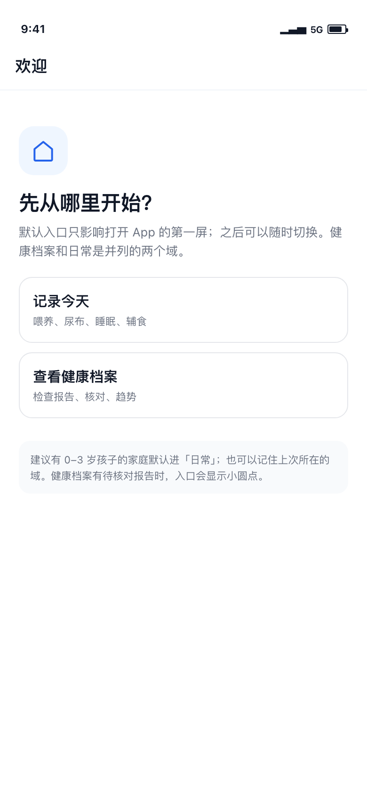
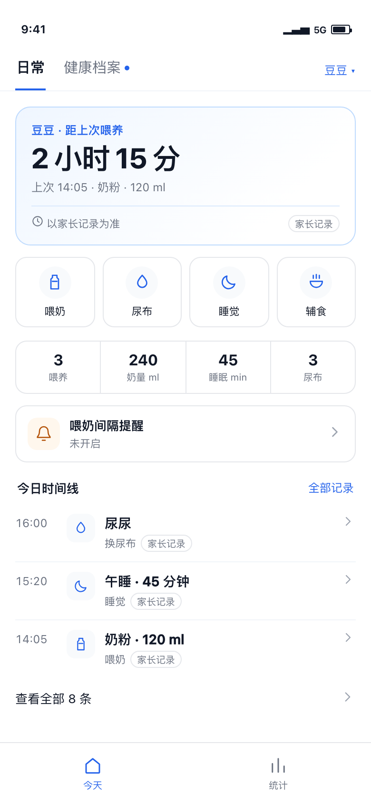
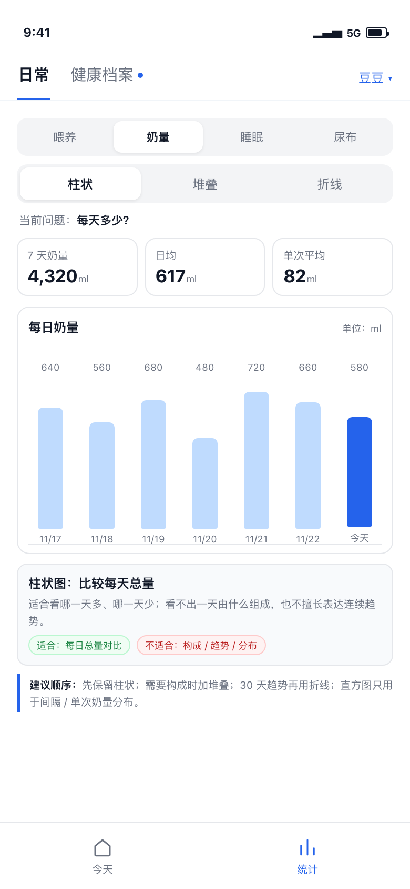
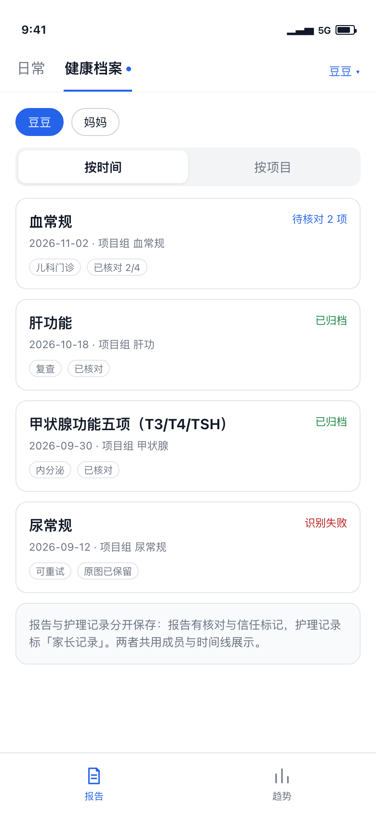
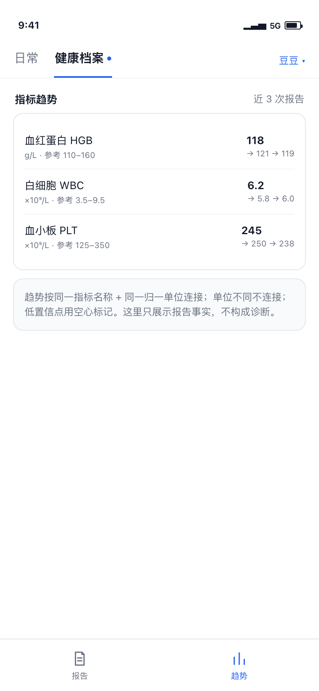

首次启动 · 选默认入口
首次打开选「记录今天 / 查看健康档案」；之后记住上次所在的域。
一级域嵌在 appbar：日常 / 健康档案；底部只显示当前域的视图。进入日常后，底部是 今天 / 统计， 健康档案不再出现在底部导航里，但 appbar 入口始终保留，并带待核对小圆点。默认进 日常 > 今天。

首次打开选「记录今天 / 查看健康档案」；之后记住上次所在的域。

appbar 里「日常」激活；底部只有今天 / 统计。健康档案不在底部，但 appbar 入口带角标。

今天 / 统计放在最顺手的位置；指标（喂养/奶量/睡眠/尿布）× 图表类型（柱状/堆叠/折线）都在这一页切换。

切到健康档案后，底部变成报告 / 趋势；日常不再出现在底部。

健康域有自己的二级视图；报告与趋势并列，不与日常的统计混在一起。

从报告列表进入详情；返回时回到健康档案，不回到日常。
底部固定「日常 / 健康档案」，顶部再分今天 / 统计。域切换最快，但高频的今天 / 统计在顶部，拇指要多抬一次。
底部放高频的今天 / 统计，appbar 放低频的日常 / 健康档案。进入日常更专注，但每次切域要抬头看 appbar。
如果真实使用是每天多次记录，B3 更顺；如果经常在记录中顺手看报告，B2 的域切换更直接。两者都不要超过两层。